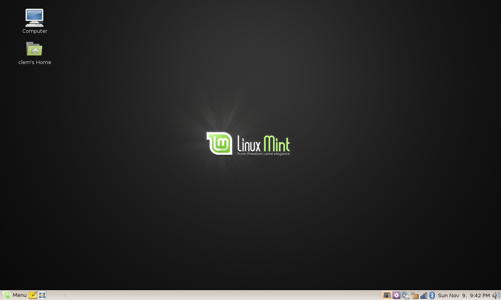
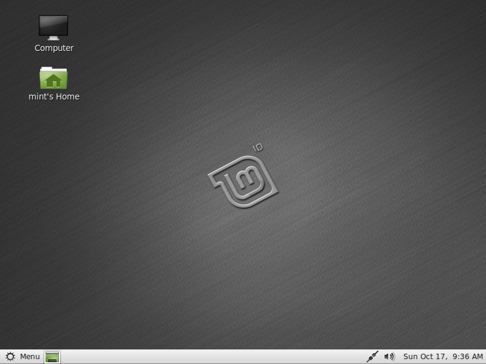

Artigos e resenhas
2006Clement Lefebvre, um desenvolvedor francês agora conhecido como "Clem", estava escrevendo análises e tutoriais para vários sites Linux. Para hospedar seus próprios artigos ele criou um site chamado "Linux Mint".
Site utilizado: linuxmintLançamentos antecipados
2006
Depois de um tempo, ele começou a entender o que a comunidade queria de uma distribuição e começou a implementar soluções para problemas comuns. Em agosto de 2006, foi lançado o Linux Mint 1.0 “Ada”, baseado no Kubuntu 6.06.
Em novembro de 2006, ele mudou para um desktop GNOME com Linux Mint 2.0 “Barbara”, baseado no Ubuntu 6.10.
Site utilizado: linuxmintUma nova ambição
2007
O projeto é extremamente popular e cresce rapidamente. Uma equipe é formada, fóruns de bate-papo e um site são abertos.
Quando o Linux Mint 3.0 "Cassandra" for lançado, o projeto terá um novo logotipo, uma identidade própria e a ambição de rivalizar com o Windows e o Mac OS.
Site utilizado: linuxmintDesenvolvimento e crescimento
2007 - 2010 O Linux Mint chega ao topo e se junta ao Ubuntu como um dos desktops mais populares do mercado.
Entre o Linux Mint 4.0 "Daryna" e o Linux Mint 9.0 "Isadora", cada vez mais ferramentas tornam o Linux Mint único: mintupdate, mintinstall, mintdisk, mintmenu, mintdesktop, mintnanny, mintbackup, mintstick, mintwelcome, mintupload...
Site utilizado: linuxmintUm desktop maduro
2010 Linux Mint apresenta uma experiência de desktop baseada no GNOME 2 que amadureceu há mais de 5 anos. É completo, extremamente estável e muito popular.
Site utilizado: linuxmintUma libertação traumática
2011Quando o GNOME 3 substitui o GNOME 2 é uma catástrofe para o Linux Mint. Muitos recursos (o painel, a bandeja, o menu...etc) estão faltando e nem a área de trabalho, o mecanismo do tema nem o kit de ferramentas são estáveis.
Apesar da reimplementação da maioria dos recursos ausentes, o lançamento do Linux Mint 12 “Lisa” baseado no GNOME 3 não é bom o suficiente e ainda hoje é considerado pela equipe como uma regressão.

Para garantir o seu futuro o Linux Mint decide alargar o âmbito do seu desenvolvimento e investe em 2 alternativas ao GNOME 3: MATE, um projecto conjunto que consiste em renomear o GNOME 2 e trazê-lo de volta, e Cinnamon, um projecto Mint, que consiste em adaptar GNOME 3 e transformá-lo em um desktop completo.
Site utilizado: linuxmintA era moderna
2010Desde 2012, o Linux Mint oferece melhorias incrementais para uma experiência de desktop cada vez mais refinada.
A equipe impulsionou seu desenvolvimento concentrando-se em 3 edições desktop (Cinnamon, MATE e Xfce) e tomando a decisão em 2014 de usar apenas versões de suporte de longo prazo.

A ênfase é colocada na qualidade versus quantidade, em fazer menos para fazer melhor e em agradar os usuários existentes, em vez de tentar atrair novos.
Seguindo o sucesso do Cinnamon e sua compatibilidade com outras distribuições, o Linux Mint também começou a desenvolver soluções de distribuição cruzada e desktops. Hoje em dia, alguns dos softwares desenvolvidos pelo Linux Mint são apreciados em muitas outras distribuições e os relatórios de bugs e o desenvolvimento são impulsionados por contribuições de pessoas fora da comunidade Linux Mint.
Site utilizado: linuxmint